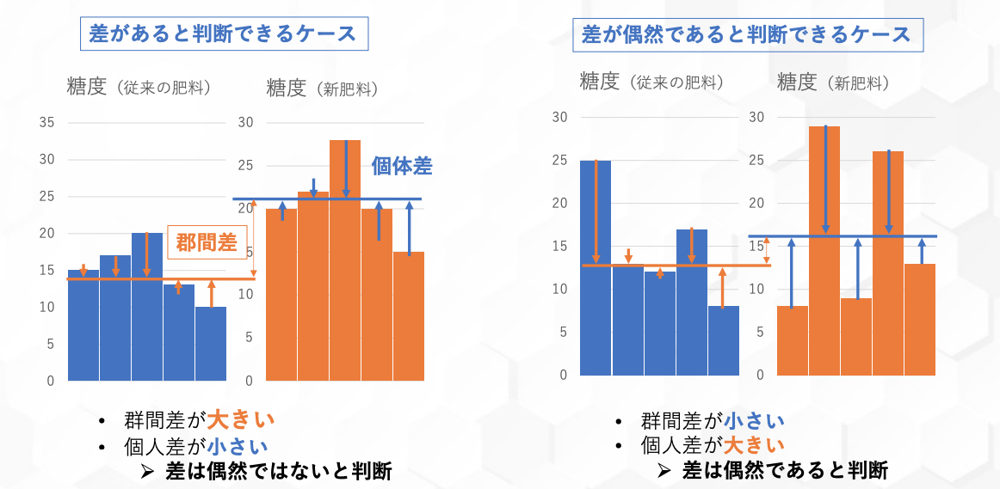
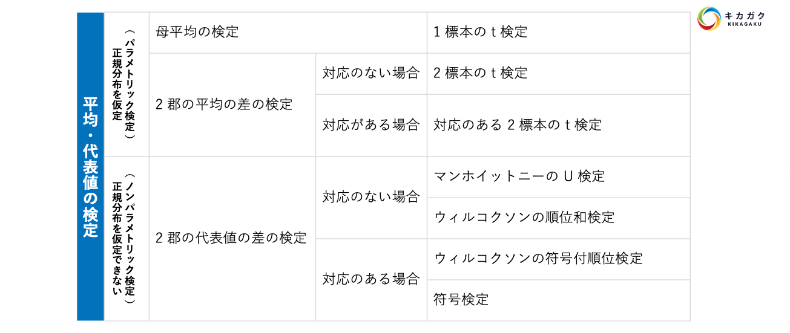
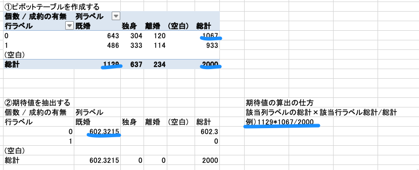
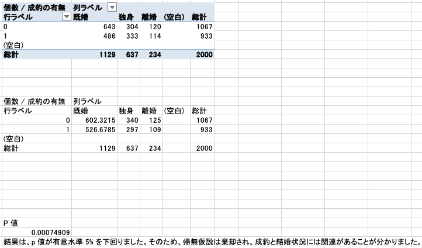

検定とは（推測統計）
本章では統計的仮説検定について学習します。検定を行うことで、仮説が正しいと言ってよいのかを判断できます。
これだけではわかりにくいので具体例を用いて考えましょう 集計や可視化を行った際に平均の差などを見つけられました。ですが現状では本当にその差があると言うことはできません。 なぜかというと、データは一部であり、すべての店舗や期間のデータがあるわけではないからです。このとき、すべてのデータのことを母集団と呼び、データが取れているもののことを標本集団と呼びます。
前章で見つけた平均の差等はあくまでも標本集団における差であり、母集団で差があるかどうかはわからないということになります。しかし、母集団のレビューデータが取れているわけではないので、母集団の平均値を直接求めることはできません。
このとき、抽出された標本集団における結果から母集団においても平均の差があるのかどうかを判定するのが検定です。 また、この検定は推測統計という分野の 1 つであり、推測統計は標本集団から母集団の性質を推測するという内容です。前章で行った標本集団の集計や可視化を行うことを記述統計と呼びます。
また推測統計には検定以外にも推定という内容があり、推定は標本集団の結果から母集団の平均値や分散を推測するような内容になります。 それでは検定の詳しい内容について学習していきましょう。
統計的仮説検定
統計的仮説検定は検定統計量と呼ばれる値を用いて確率的に正しさを検定します。具体例を用いてイメージを付けましょう。 例えば、以下のような課題に対して扱うことができます。
検定を使用すると、平均の差は偶然出た差なのか、それとも何らかの要因で出た差なのか、ということを判定することができます。 また、以下のような課題も扱うことができます。
このような課題に対して使用できるのが統計的仮説検定です。 統計的仮説検定では、例 1 のように、母集団と標本集団の差を確認するものと、例 2 のように 2 標本の差を確認するものなどがあり、それぞれで活用できる大変便利な手法です。
では、なぜ検定で平均の差を確認できるのか以下の図からイメージを掴みましょう。

平均の差の検定の仕組み
検定にはいくつかの種類がり、目的やデータの性質によって使い分けを行います。 本章では、代表的な分析手法として t 検定（平均の差の検定）と 二乗検定を扱います。 それぞれは以下のような使い分けがなされます。
まずは、t 検定から扱います。 t 検定は先程ご紹介した 2 標本の平均の差を証明刷るなどに使用できる検定手法です。
今回はキャンペーン前の２ヶ月まえのデータと本データの検定を行い、キャンペーンによる差があったのかどうか。（キャンペーンに効果があったのかどうか）を検定します。
検定の流れがつかめたところで、検定の種類についても確認しておきましょう。t 検定を含む平均の差の検定にはいくつかの種類があり、使い分ける必要があります。使い分けにはいくつかの条件があるのですが、まずは以下の図から確認しましょう。

t-検定: 等分散を仮定した２標本による検定 の実装
T 検定を実装し、下記についてしらべます。 今回は、銀行のマーケティングキャンペーンのデータではなくデモデータを用いて解説します。 最後の演習時にマーケティングデータを用いて T 検定を実装してみましょう。
①仮説をたてる 帰無仮説（H_0）: 2 群間の平均値に差がない（本施策に効果があるとはいえない） 対立仮説（H_1）: 2 群間の平均値に差がある（本施策に効果がある）
②有意水準を決める
今回は有意水準を 5% とします。
③ p 値を計算する
今回は対応があるデータですので、t-検定: 一対の標本による平均の検定 を使用して p 値を計算します。
カイ二乗検定
次は、カイ二乗検定について取り扱います。 カイ二乗検定は独立性の検定とも呼ばれ、A と B には関連があるかないかを調べるために使用します。使用シーンとしては、「アンケート結果について、ある質問 A ある質問 B の結果に関連があるかどうかを調べる」などです。
t 検定と混同しやすいのですが、t 検定は数値（確率）に関する検定、 カイ二乗検定はカテゴリ分けの検定とイメージを持っておくと良いです。
カイ二乗検定は前提としてノンパラメトリックな分析手法の 1 つです。そのため分析対象とするデータは正規分布に従っている必要はありません。
カイ二乗検定は次の手順で行います。
仮説を設定する
期待度数を求める
実測度数と期待度数から,カイ二乗値を算出
カイ二乗値から P 値を算出する
カイ二乗検定の実装
カイ二乗検定は［分析ツール］ではサポートしていませんが、CHISQ.TEST という関数を使って検定を行います。 期待度数という考え方を理解して、 カイ二乗値を計算できるようになりましょう。
【問題】 以下の仮説を調べる - 結婚状況と成約の有無は関連性があるのではないか
仮説を立てる
帰無仮説（H_0）：二つの変数は独立である。
対立仮説（H_1）：二つの変数は独立ではない（何らかの関連がある。）
有意水準を決める
今回は有意水準を 5% とします。
期待度数を求める 先程の期待度数の求め方にしたがって、以下のように求めていきます。

Excelを参考に他の値を計算し、埋めましょう。
p 値を計算する カイ二乗検定の P 値は以下を使用して算出します。 =CHISQ.TEST(実測度数, 期待度数)
判定 
結果は、p 値が有意水準 5% を下回りました。そのため、帰無仮説は棄却され、成約と有無と結婚状況には関連があることがわかりました。
ここまでで仮説検定を実装してきました。最後に行った カイ二乗検定は、連続値であっても区切ってしまえば順位尺度として扱えるため、幅広く使用できるため便利です。
しっかりとインプットとアウトプットを意識して実装に慣れていきましょう。